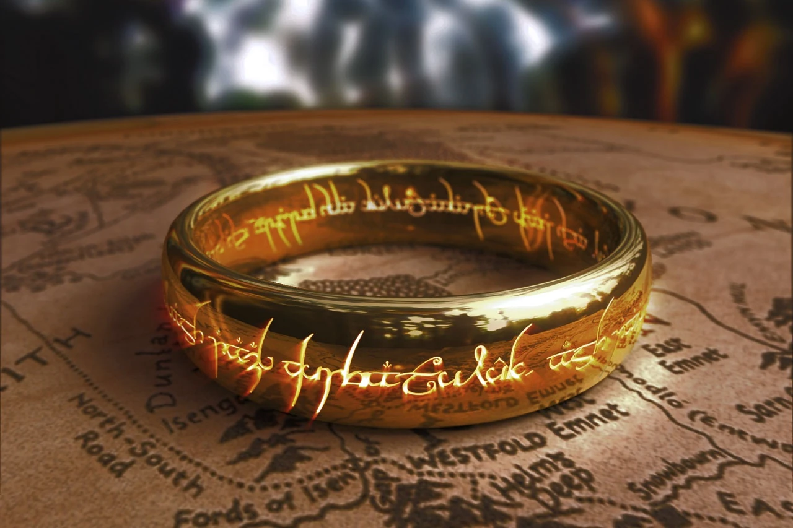
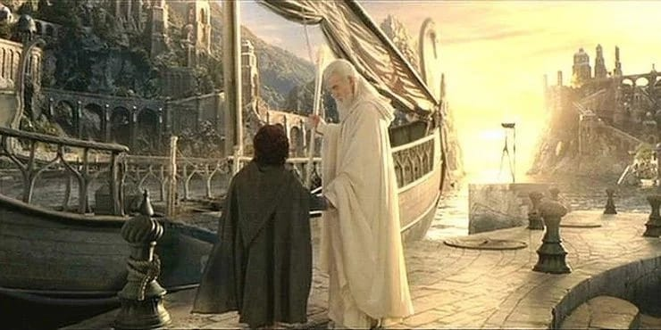
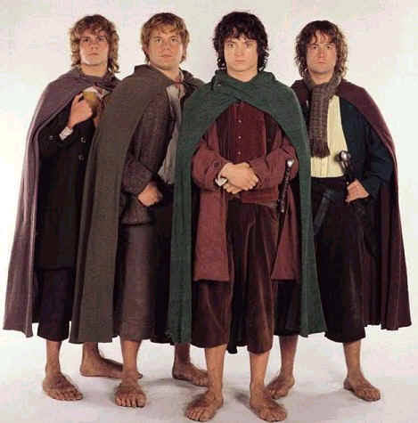
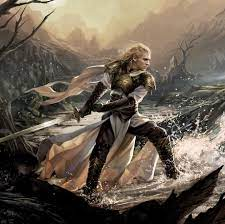
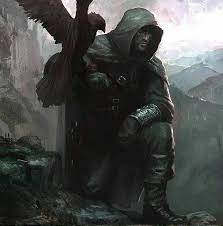

La Tierra Media
J. R. R. Tolkien
El Hobbit y El Señor de los Anillos son una serie de libros escritos por J.R.R. Tolkien.
Añade aquí un menú, penca
Inicio de El Hobbit
 "En un agujero en el suelo, vivía un hobbit. No un agujero sucio, húmedo, repugnante, con restos de gusanos y olor a fango, ni tampoco un agujero seco, desnudo y arenoso, sin nada en qué sentarse o qué comer: era un agujero hobbit, y eso significa comodidad. Tenía una puerta redonda, perfecta como un ojo de buey pintado de verde, con una manilla de bronce dorada y brillante, justo en el medio.
"En un agujero en el suelo, vivía un hobbit. No un agujero sucio, húmedo, repugnante, con restos de gusanos y olor a fango, ni tampoco un agujero seco, desnudo y arenoso, sin nada en qué sentarse o qué comer: era un agujero hobbit, y eso significa comodidad. Tenía una puerta redonda, perfecta como un ojo de buey pintado de verde, con una manilla de bronce dorada y brillante, justo en el medio.
La puerta se abría a un vestíbulo cilíndrico, como un túnel: un túnel muy cómodo, sin humos, con paredes revestidas de maderas y suelos enlosados y alfombrados, provistos de sillas barnizadas y montones y montones de perchas para sombreros y abrigos; el hobbit era aficionado a las visitas. El túnel se extendía serpenteando, y penetraba bastante, pero no directamente, en la ladera de la Colina, y muchas puertecitas redondas se abrían en él, primero en un lado y luego al otro.
Nada de subir escaleras para el hobbit: dormitorios, cuartos de baño, bodegas, despensas (muchas), armarios (habitaciones enteras dedicadas a ropa), cocinas, comedores se encontraban en la misma planta, y en el mismo pasillo. Las mejores habitaciones estaban todas a la izquierda de la puerta principal, pues eran las únicas que tenían ventanas, ventanas redondas, profundamente excavadas, que miraban al jardín y los prados de más allá, camino del río."
El Hobbit de J.R.R. Tolkien.
Forjado de los anillos
"Tres Anillos para los Reyes Elfos bajo el cielo.
Siete para los Señores Enanos en palacios de piedra.
Nueve para los Hombres Mortales condenados a morir.
Uno para el Señor Oscuro,
sobre el trono oscuro en la Tierra de Mordor donde se extienden las Sombras.
Un Anillo para gobernarlos a todos.
Un Anillo para encontrarlos,
un Anillo para atraerlos a todos y atarlos en las tinieblas
en la Tierra de Mordor donde se extienden las Sombras."
La Comunidad del Anillo de J.R.R. Tolkien.
Anillos que se forjaron

- Tres para los elfos
- Siete para los enanos
- Nueve para los hombres
- Uno para gobernarlos a todos
Viaje de Frodo

- La Comarca
- Bree
- Rivendel
- Moria
- Minas Morgul
- Cirith Ungol
- Mordor
- Monte del Destino
...
- Valinor
Definiciones
|  |
- Hobbit:
- Son (o fueron) gente menuda de la mitad de la talla de un humano, y más pequeños que los enanos barbudos. Los hobbits no poseen barba. Hay poca o ninguna magia en ellos.
|
|  |
- Elfo:
- Los Elfos fueron la más antigua y noble de las razas hablantes de la Tierra Media. Son la raza más antigua del mundo y son los primeros hijos de Eru Iluvatar en venir al mundo y más tarde encontrados por los Valar.
|
|  |
Dúnedain:
Subraza de hombres. Son los descendientes de los edain, las tres casas de los amigos de los elfos.Los dúnedain eran superiores a los demás hombres en nobleza de espíritu, a pesar de que todavía eran mortales.
|
 |
Nazgûl:
Se dice que tres de los nueve fueron originalmente "grandes señores" de Númenor. Eran poderosos hombres mortales a los cuales Sauron dio nueve Anillos de Poder.
|
Distribución de razas de la Tierra Media
| Razas |
Zona |
| Enanos |
Moria, Colinas de Hierro,
Montañas Grises, Montañas Azules |
| Hobbits |
Comarca |
| Hombres del Oeste |
Gondor |
| Elfos |
Rivendel, Valinor, Lothlóriel |
| Hombres de los caballos |
Rohan |
| Orcos |
Mordor |
| Uruk-hai |
Isengard |
Canción de los enanos
Más allá de las frías y brumosas montañas,
a mazmorras profundas y cavernas antiguas,
en busca del metal amarillo encantado,
hemos de ir, antes que el día nazca.
Los enanos echaban hechizos poderosos
mientras las mazas tañían como campanas,
en simas donde duermen criaturas sombrías,
en salas huecas bajo las montañas.
Citas destacadas
I am no man.
-Éowyn
"Guerra ha de haber mientras tengamos que defendernos de la maldad de un poder destructor que nos devoraría a todos; pero yo no amo la espada porque tiene filo, ni la flecha porque vuela, ni al guerrero porque ha ganado la gloria. Sólo amo lo que ellos defienden."
-Gandalf
"Vive en el agua, fresca y clara. Los ricos peces, nuestro manjar." -Gollum
"¡Ladrón!""Smeagol cuida del amo.""¡Lo odiamos por siempre!""Mi tesoro..."
-Gollum/Smeagol
"A menudo el odio se vuelve contra uno mismo."
-Gandalf
"Las cosas seguirán el curso natural; es inútil querer apresurarlas."
-Barbol
"Las palabras hermosas esconden a veces un corazón infame."
-Sam
"El alabar lo que es digno de alabanza no necesita recompensa."
-Faramir
"Así suele ocurrir, Sam, cuando las cosas están en peligro: alguien tiene que renunciar a ellas, perderlas, para que otros las conserven."
-Frodo
"El dolor, no lo olvidará; pero no le oscurecerá el corazón, y le dará sabiduría."
-Aragorn
"Ni tampoco es siempre lo malo morir en la batalla, aun con grandes sufrimientos."
-Éowyn
"No os diré: no lloréis; porque no todas las lágrimas son malas."
-Gandalf
Enlaces de compra